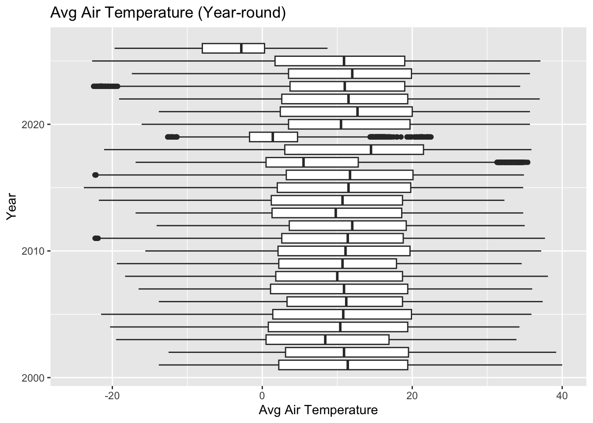
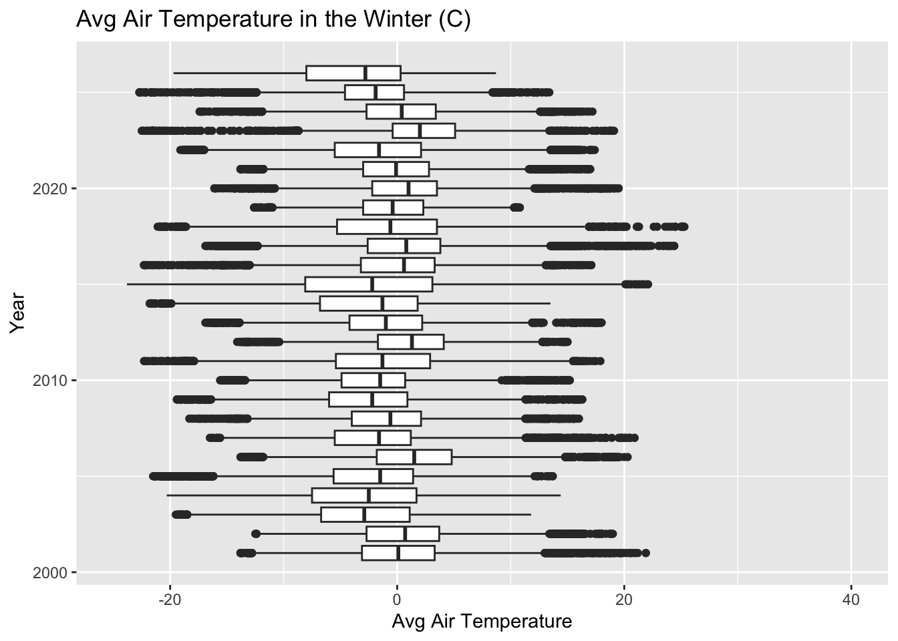
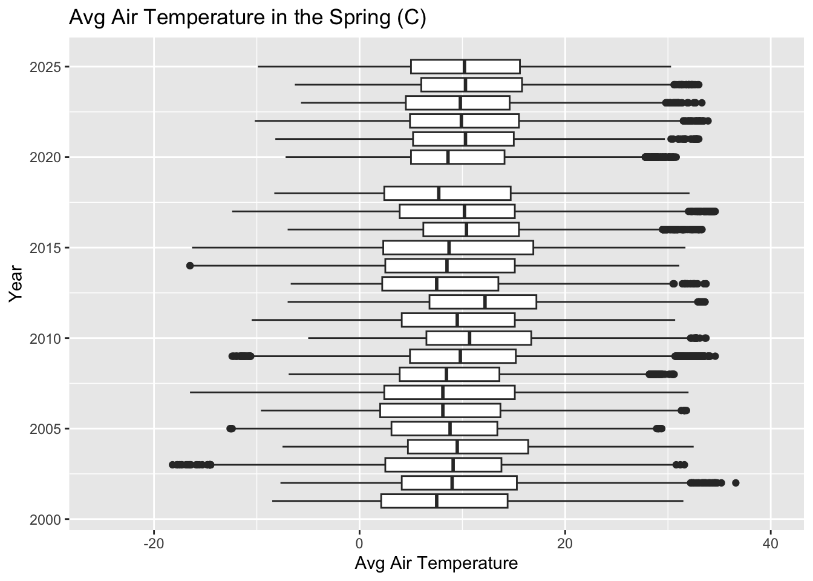
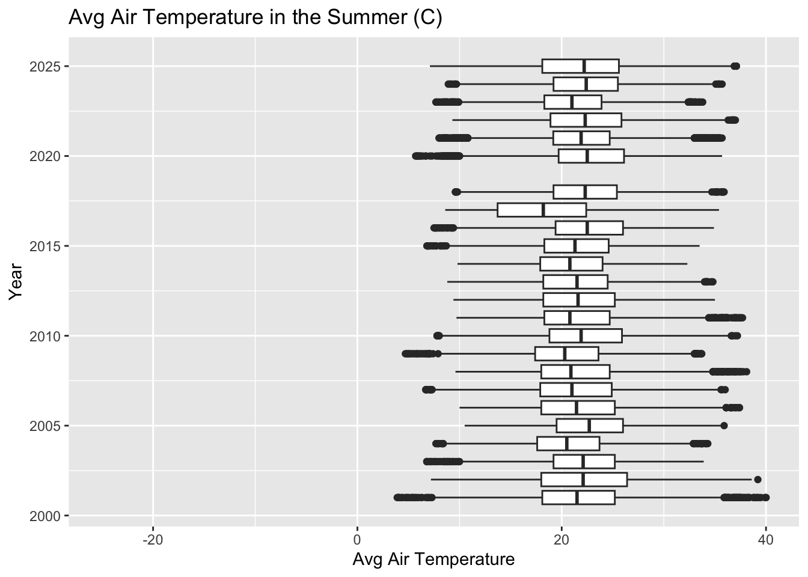
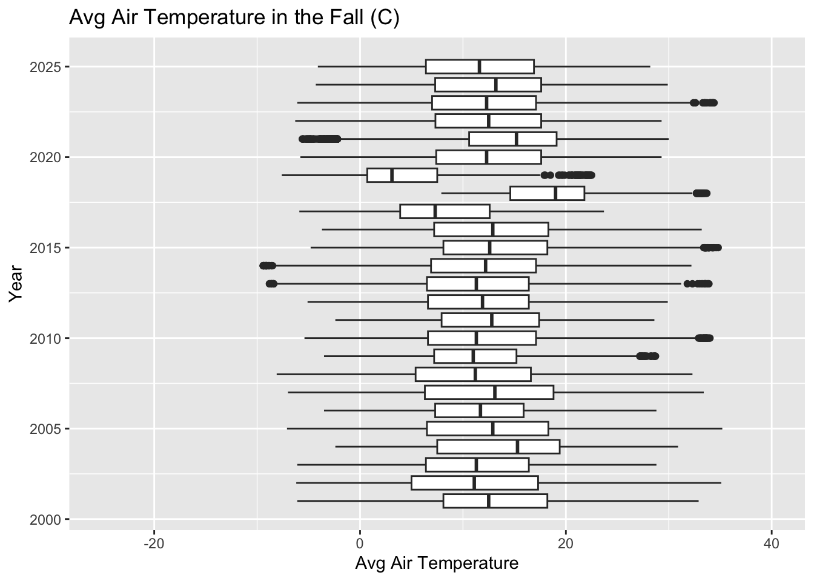

Exploratory Data Analysis on Meteorological Data from (2001 - 2026)
Project Set Up
Loading libraries
Importing data containing meteorological data from the website
Data Cleaning
Removing irrelevant columns
Removing invalid data
Cleaning and creating new dates column
Exploratory Data Analysis
Average Air Temperature (ATemp)
ATemp measures average air temperature measured in degrees Celsius (C).
Subsetting: ATemp
Plots
Line/Scatterplot
Avg Air Temperature (Year-round)
Avg Air Temperature (Winter)
Avg Air Temperature (Spring)
Avg Air Temperature (Summer)
Avg Air Temperature (Fall)
Boxplots:
Avg Air Temperature (Year-round)
Avg Air Temperature (Winter)

Avg Air Temperature (Spring)

Avg Air Temperature (Summer)
Warning: Removed 1 row containing non-finite outside the scale range
(`stat_boxplot()`).
Avg Air Temperature (Fall)

Average Relative Humidity (RH)
RH: average relative humidity measured in percent saturation (%)
Subsetting: RH
Plots
Line/Scatterplot
Average Relative Humidity (Year-round)
Average Relative Humidity (Winter)
Average Relative Humidity (Spring)
Average Relative Humidity (Summer)
Average Relative Humidity (Fall)
Boxplots:
Average Relative Humidity (Year-round)
Average Relative Humidity (Winter)
Average Relative Humidity (Spring)
Average Relative Humidity (Summer)
Average Relative Humidity (Fall)
Average Barometric Pressure (BP)
BP: average barometric pressure measured in millibars (mb)
Subsetting: BP
Plots
Line/Scatterplot
Average Barometric Pressure (Year-round)
Average Barometric Pressure (Winter)
Average Barometric Pressure (Spring)
Average Barometric Pressure (Summer)
Average Barometric Pressure (Fall)
Boxplots:
Average Barometric Pressure (Year-round)
Average Barometric Pressure (Winter)
Average Barometric Pressure (Spring)
Average Barometric Pressure (Summer)
Average Barometric Pressure (Fall)
Average Wind Speed (WSpd)
WSpd: average wind speed measured in meters per second (m/s)
Subsetting: WSpd
Plots
Line/Scatterplot
Average Wind Speed (Year-round)
Average Wind Speed (Winter)
Average Wind Speed (Spring)
Average Wind Speed (Summer)
Average Wind Speed (Fall)
Boxplots:
Average Wind Speed (Year-round)
Average Wind Speed (Winter)
Average Wind Speed (Spring)
Average Wind Speed (Summer)
Average Wind Speed (Fall)
Maximum Wind Speed (MaxWSpd)
MaxWSpd: max wind speed measured in meters per second (m/s)
Subsetting: MaxWSpd
Plots
Line/Scatterplot
Maximum Wind Speed (Year-round)
Maximum Wind Speed (Winter)
Maximum Wind Speed (Spring)
Maximum Wind Speed (Summer)
Maximum Wind Speed (Fall)
Boxplots:
Maximum Wind Speed (Year-round)
Maximum Wind Speed (Winter)
Maximum Wind Speed (Spring)
Maximum Wind Speed (Summer)
Maximum Wind Speed (Fall)
Time of Maximum Wind Speed Measurement #most likely not needed
MaxWSpdT: time of max wind speed measurement (hh:mm)
Subsetting: MaxWSpdT
Plots
Line/Scatterplot
Time of Maximum Wind Speed Measurement (Year-round)
Time of Maximum Wind Speed Measurement (Winter)
Time of Maximum Wind Speed Measurement (Spring)
Time of Maximum Wind Speed Measurement (Summer)
Time of Maximum Wind Speed Measurement (Fall)
Boxplots:
Time of Maximum Wind Speed Measurement (Year-round)
Time of Maximum Wind Speed Measurement (Winter)
Time of Maximum Wind Speed Measurement (Spring)
Time of Maximum Wind Speed Measurement (Summer)
Time of Maximum Wind Speed Measurement (Fall)
Average Wind Direction
Wdir: average wind direction measured in degrees true North as of April 1, 2008. Prior to April 1, 2008 wind direction was measured with no correction for magnetic declination. See Reserve metadata for exact date of shift to true North.
Subsetting: Wdir
Plots
Line/Scatterplot
Average Wind Direction (Year-round)
Average Wind Direction (Winter)
Average Wind Direction (Spring)
Average Wind Direction (Summer)
Average Wind Direction (Fall)
Boxplots:
Average Wind Direction (Year-round)
Average Wind Direction (Winter)
Average Wind Direction (Spring)
Average Wind Direction (Summer)
Average Wind Direction (Fall)
Wind Direction Standard Deviation (SDWDir)
SDWDir: wind direction standard deviation (sd)
Subsetting: SDWDir
Plots
Line/Scatterplot
Wind Direction Standard Deviation (Year-round)
Wind Direction Standard Deviation (Winter)
Wind Direction Standard Deviation (Spring)
Wind Direction Standard Deviation (Summer)
Wind Direction Standard Deviation (Fall)
Boxplots:
Wind Direction Standard Deviation (Year-round)
Wind Direction Standard Deviation (Winter)
Wind Direction Standard Deviation (Spring)
Wind Direction Standard Deviation (Summer)
Wind Direction Standard Deviation (Fall)
Total Photosynthetically Active Radiation (TotPAR)
TotPAR: total photosynthetically active radiation measured in millimoles per square meter (total flux integrated over each 15-minute logging interval)
Subsetting: TotPAR
Plots
Line/Scatterplot
Total Photosynthetically Active Radiation (Year-round)
Total Photosynthetically Active Radiation (Winter)
Total Photosynthetically Active Radiation (Spring)
Total Photosynthetically Active Radiation (Summer)
Total Photosynthetically Active Radiation (Fall)
Boxplots:
Total Photosynthetically Active Radiation (Year-round)
Total Photosynthetically Active Radiation (Winter)
Total Photosynthetically Active Radiation (Spring)
Total Photosynthetically Active Radiation (Summer)
Total Photosynthetically Active Radiation (Fall)
Total Precipitation (TotPrcp)
TotPrcp: total precipitation measured in millimeters (mm)
Subsetting: TotPrcp
Plots
Line/Scatterplot
Total Precipitation (Year-round)
Total Precipitation (Winter)
Total Precipitation (Spring)
Total Precipitation (Summer)
Total Precipitation (Fall)
Boxplots:
Total Precipitation (Year-round)
Total Precipitation (Winter)
Total Precipitation (Spring)
Total Precipitation (Summer)
Total Precipitation (Fall)
Cumulative Precipitation (CumPrcp)
CumPrcp: cumulative precipitation measured in millimeters (mm)